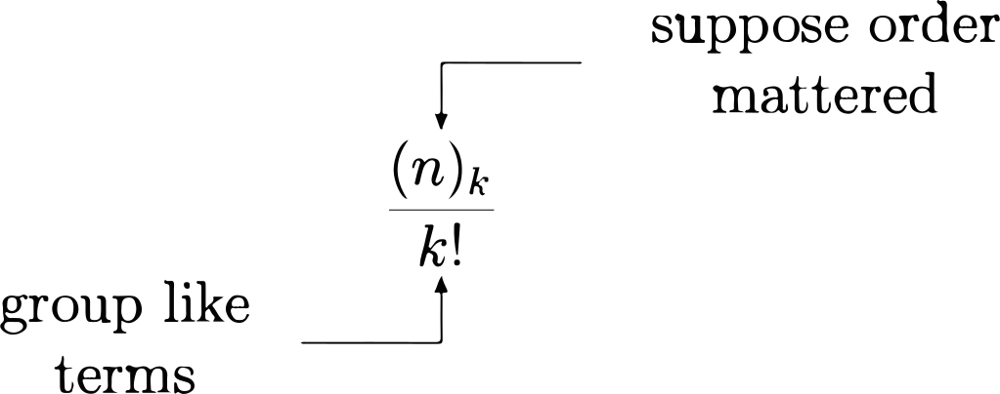

PSTAT 5A: Lecture 04
Probability and Counting
Recap, and Addendum
Last Time
Last time we discussed the basics of probability.
- These included things like: experiments, outcome spaces, events, and probability.
We briefly talked about the different approaches to defining the probability of an even.
Finally, we also saw how Venn Diagrams can help visualize set relationships and operations.
Leadup
Now, let’s return to the classical approach to probability.
Assuming the outcomes in our outcome space \(\Omega\) are equally likely, the classical approach tells us to compute the probability of any event \(E\) as \[ \mathbb{P}(E) = \frac{\text{number of ways $E$ can occur}}{\text{total number of elements in $\Omega$}} \]
Up until now, we’ve computed both the numerator and the denominator by explicitly listing out the elements contained in the respective sets, and then counting the number of elements.
This works decently for small sets, but is highly inefficient for large sets.
- Wouldn’t it be nice if there was a way to systematically count the elements in a set, without having to explicitly enumerate all elements?
- Thankfully- there do exist some tools for that exact purpose:
Counting
Ice Cream
Before diving fully into the principles of counting, let’s examine a simple situation.
Suppose we are at a small boutique ice cream parlor that offers only 3 flavors (Vanilla, Chocolate, and Matcha), and 2 toppings (sprinkles or coconut).
- Further suppose that an order of ice cream must contain only 1 flavor and 1 topping.
We can list out the different orders that are possible (i.e. the outcome space of the experiment of ordering an ice cream from this shop) using a tree diagram:
We can see that there are 6 outcomes in \(\Omega\).
But, let’s see if we can systematically figure out where this
6came from.- For each of the 3 flavors, there are 2 toppings available. Hence, the total number of flavor-topping combinations is 3\(\times\)2, or 6
Fundamental Principle of Counting
- This is no accident!
Fundamental Principle of Counting
If an experiment consists of \(k\) stages, where the \(i\)th stage has \(n_i\) possible configurations, then the total number of elements in the outcome space is \[ n_1 \times n_2 \times \cdots \times n_k \]
- So, when we obtained our answer of \(6\) on the previous slide, we were implicitly using the Fundamental Principle of Counting with 2 stages (picking a flavor, and picking a topping) where the first stage (picking a flavor) had 3 possible configurations (Vanilla, Chocolate, or Matcha) and the second stage (picking a topping) had two possible configurations (sprinkles or coconut).
Slot Diagrams
When dealing with the Fundamental Principle of Counting, I find it useful to utilize what are sometimes referred to as slot diagrams.
Here’s how we use slot diagrams:
First put down as many slots as there are stages in our experiment: \[ \underline{\ \ \ \ \ } \ \ \ \underline{\ \ \ \ \ } \ \ \ \cdots \ \ \ \underline{\ \ \ \ \ } \]
Then, fill in each slot with the corresponding number of configurations: \[ \underline{\ n_1 \ } \ \ \ \underline{\ n_2 \ } \ \ \ \cdots \ \ \ \underline{\ n_k \ } \]
Finally, invoke the Fundamental Principle of Counting to multiply the slots together: \[ \underline{\ n_1 \ } \ \times \ \underline{\ n_2 \ } \ \times \ \cdots \ \times \underline{\ n_k \ }\]
Worked-Out Example
Worked-Out Example 1
Suppose a (different) ice cream parlor has 32 flavors, 5 toppings, and 3 drizzles. If a “scoop” consists of a flavor, topping, and drizzle, how many scoops can be created?
There are 3 stages: picking a flavor, picking a topping, and picking a drizzle. Hence, we draw three slots: \[ \underline{\ \ \ \ \ } \ \ \ \underline{\ \ \ \ \ } \ \ \ \underline{\ \ \ \ \ } \]
The first stage has 32 configurations, the second has 5, and the third has 3: \[ \underline{\ 32 \ } \ \ \ \underline{\ 5 \ } \ \ \ \underline{\ 3 \ } \]
Finally, we multiply through: \[ \underline{\ 32 \ } \ \times \ \underline{\ 5 \ } \ \times \ \underline{\ 3 \ } = \boxed{480} \]
Ordering
Here’s a question: given \(n\) tickets (labeled \(1\) through \(n\)), how many different ways are there to arrange them in a line?
Let’s answer this using a slot diagram!
We can think of \(n\) stages, where the first stage corresponds to placing the first ticket down, the second stage corresponds to placing the second ticket down, and so on and so forth. \[ \underbrace{ \underline{\ \ \ \ \ } \ \ \ \underline{\ \ \ \ \ } \ \ \ \cdots \ \ \ \underline{\ \ \ \ \ } \ \ \ \underline{\ \ \ \ \ } }_{\text{$n$ slots}} \]
- For the first stage, we have \(n\) possible configurations as we have \(n\) tickets available to us: \[ \underbrace{ \underline{\ n \ } \ \ \ \underline{\ \ \ \ \ } \ \ \ \cdots \ \ \ \underline{\ \ \ \ \ } \ \ \ \underline{\ \ \ \ \ } }_{\text{$n$ slots}} \]
- For the second stage, however, we no longer have \(n\) tickets available to us as we’ve already placed one down! As such, we have \(n - 1\) configurations for the second stage: \[ \underbrace{ \underline{\ n \ } \ \ \ \underline{\ n - 1 \ } \ \ \ \cdots \ \ \ \underline{\ \ \ \ \ } \ \ \ \underline{\ \ \ \ \ } }_{\text{$n$ slots}} \]
- This continue until finally we will be left with only one ticket, which we place in the final position: \[ \underbrace{ \underline{\ n \ } \ \ \ \underline{\ n - 1 \ } \ \ \ \cdots \ \ \ \underline{\ 2 \ } \ \ \ \underline{\ 1 \ } }_{\text{$n$ slots}} \]
Hence, multiplying through (by the Fundamental Principle of Counting), we find that the total number of ways to arrange \(n\) tickets in a line is \[ n \times (n - 1) \times \cdots \times 2 \times 1 \]
This quatntity arises so often, we give it a name: \(n\) factorial.
Factorials
Definition
For a positive integer \(n\), we define \(n\) factorial (denoted \(n!\)), to be \[ n! = n \times (n - 1) \times (n - 2) \times \cdots \times 2 \times 1 \]
- For example:
- \(3! = 3 \times 2 \times 1 = 6\)
- \(4! = 4 \times 3 \times 2 \times 1 = 24\)
- \(5! = 5 \times 4 \times 3 \times 2 \times 1 = 120\)
Worked-Out Example
Worked-Out Example 1
Siobhan has 4 shirts in her closet: 2 purple shirts and 2 red shirts. When organizing these shirts in her closet she wants to keep the purple shirts together and the red shirts together, but doesn’t care if the purple group is to the left or the right of the red group. How many ways are there for Siobhan to arrange these shirts in her closet?
Let’s answer this question two ways: using direct enumeration, and then using counting techniques.
Label the two purple shirts \(P_1\) and \(P_2\) respectively, and label the two red shirts \(R_1\) and \(R_2\) respectively. Then here are all of the possible reorderings of the shirts:
\[\begin{align*} \Omega = \{ & P_1 P_2 R_1 R_2, \ P_1 P_2 R_2 R_1, \ P_2 P_1 R_1 R_2, \ P_2 P_1 R_2 R_1 , \\ & R_1 R_2 P_1 P_2, \ R_2 R_1P_1 P_2, \ R_1 R_2 P_2 P_1, \ R_2 R_1P_2 P_1 \} \end{align*}\]
So, there are 8 possible reorderings of the shirts.
Let’s try and get to that 8 in a more systematic way.
First, let’s fix the order of the color groups: suppose we fix the red shirts to be left of the purple shirts.
- We can then appeal to slot diagrams with 4 slots (one for each of the shirts): \[ \underbrace{ \underline{\ 2 \ } \ \times \ \underline{\ 1 \ } }_{\text{picking the red shirts}} \ \times \ \underbrace{ \underline{\ 2 \ } \ \times \ \underline{\ 1 \ } }_{\text{picking the purple shirts}} = 4 \]
But, we are not done- the red shirts could have been to the right of the purple shirts! As such, we need to multiply our \(4\) from above by \(2\), which is the number of ways to rearrange the color groups amongst themselves. This gives us \[ 4 \times 2 = \boxed{8 \text{ possible reorderings}} \]
Does Order Matter?
Let’s now consider a slightly more abstract experiment: consider drawing two tickets from a box with tickets labeled \(A\) through \(C\), not replacing my first ticket after I draw it.
- How many elements are in the outcome space of this experiment?
Well, the answer is…. it depends!
Specifically, we need to know: does order matter?
Here’s what I mean by order mattering: in a license plate,
123ABCandABC123are clearly two different license plates, despite the fact that they are comprised of the same letters and numbers!An example of a situation in which order does not matter is drawing cards from a deck of cards: whether I get the Ace of Hearts before or after the King of Diamonds doesn’t matter- all that mattes is that I have the Ace of Hearts and the King of Diamonds!
Speaking of cards, you’ll discuss playing cards a bit more on future assignments.
If Order Does Matter
Let’s examine what happens when we assume order does matter.
In the context of our drawing tickets example, this means that getting \(A\) followed by \(C\) is different than getting \(C\) followed by \(A\).
Then, letting \((X, Y)\) denote the outcome “I drew the ticket labelled \(X\) first, then the ticket labelled \(Y\) second” (for \(X \in \{A, B, C\}\) and \(Y \in \{A, B, C\}\)), we have \[\begin{align*} \Omega = \{ & (A, B), \ (A, C) \\ & (B, A), \ (B, C) \\ & (C, A), \ (C, B) \} \end{align*}\]
- By the way, can anyone tell me why I didn’t include outcomes like \((A, A)\)?
- So, the answer is 6.
But we cheated a little- the whole point of introducing counting was so that we didn’t have to list out all the elements int he outcome space anymore!
Here’s how we can get to the answer using slot diagrams.
We have two stages (since we are drawing two tickets).
- For the first stage we have 3 possibilities
- For the second stage we have 2 possibilities
- Hence, our slot diagram looks like: \[ \underline{\ 3 \ } \ \times \ \underline{ \ 2 \ } = \boxed{6} \]
Generalizing
Let’s generalize to picking \(k\) tickets from a total \(n\): \[ \underline{\ \ \ \ \ {\color{blue} {n}} \ \ \ \ \ } \ {\times} \ \underline{\ \ \ \ \ {\color{blue}{n - 1}} \ \ \ \ \ } \ {\times} \ \underline{\ \ \ \ \ {\color{blue}{n - 2}} \ \ \ \ \ } \ {\times} \ \cdots \ {\times} \underline{\ \ \ \ \ {\color{blue} {n - k + 1}} \ \ \ \ \ } \]
We can write this a little more succinctly using factorials: \[ n \times (n - 1) \times \cdots \times (n - k + 1) = \frac{n!}{(n - k)!} \]
This is yet another quantity that arises so often, we give it a name: this time we call it \(n\) order \(k\), and write \((n)_k\)
\(n\) order \(k\)
Definition
For a positive integer \(n\) and another positive integer \(k\) that is less than \(n\), \[ (n)_k = \frac{n!}{(n - k)!} = n \times (n - 1) \times \cdots \times (n - k + 1) \]
- For example:
- \((5)_3 = 5 \times 4 \times 3 = 60\)
- \((6)_2 = 6 \times 5 = 30\)
- \((4)_4 = 4 \times 3 \times 2 \times 1 = 24\)
Worked-Out Example
Worked-Out Example 2
Suppose now that I have 5 tickets, labeled \(A\) through \(E\), and I now want to draw 3. How many ways are there to do this, assuming order matters?
By our work above, the answer is \((5)_3 = 5 \times 4 \times 3 = \boxed{60}\).
Don’t believe me?
\[{\tiny \begin{aligned}[t] \Omega & = \{ (A, B, C), \ (A, B, D), \ (A, B, E), \ (A, C, B), \ (A, C, D), \ (A, C, E), \ (A, D, B), \ (A, D, C), \ (A, D, E), \ (A, E, B), \ (A, E, C), \ (A, E, D), \\ % & \hspace{5mm} (B, A, C), \ (B, A, D), \ (B, A, E), \ (B, C, A), \ (B, C, D), \ (B, C, E), \ (B, D, A), \ (B, D, C), \ (B, D, E), \ (B, E, A), \ (B, E, C), \ (B, E, D), \\ % & \hspace{5mm} (C, A, B), \ (C, A, D), \ (C, A, E), \ (C, B, A), \ (C, B, D), \ (C, B, E), \ (C, D, A), \ (C, D, B), \ (C, D, E), \ (C, E, A), \ (C, E, B), \ (C, E, D), \\ % & \hspace{5mm} (D, A, B), \ (D, A, C), \ (D, A, E), \ (D, B, A), \ (D, B, C), \ (D, B, E), \ (D, C, A), \ (D, C, B), \ (D, C, E), \ (D, E, A), \ (D, E, B), \ (D, E, C), \\ % & \hspace{5mm} (E, A, B), \ (E, A, C), \ (E, A, D), \ (E, B, A), \ (E, B, C), \ (E, B, D), \ (E, C, A), \ (E, C, B), \ (E, C, D), \ (E, D, A), \ (E, D, B), \ (E, D, C) \} \end{aligned}}\]
Order Doesn’t Matter
Let’s return to our example of drawing \(2\) tickets from a set of tickets labeled \(A\) through \(C\).
We previously saw that if order does matter, there are 6 possible outcomes: \[\begin{align*} \Omega = \{ & (A, B), \ (A, C) \\ & (B, A), \ (B, C) \\ & (C, A), \ (C, B) \} \end{align*}\]
If order doesn’t matter, we actually have fewer outcomes! Specifically:
- \((A, C)\) and \((C, A)\) become equivalent
- \((A, B)\) and \((B, A)\) become equivalent
- \((B, C)\) and \((C, B)\) become equivalent
So, \(\Omega\) becomes \(\{(A, B), \ (A, C), \ (B, C)\}\), so we have only 3 elements in \(\Omega\).
- But we cheated again!
- Here’s the systematic way to arrive at the right answer:
- Start by supposing order did matter; then there are 6 possibilities.
- Now, divide through by the number of ways to reorder 2 elements among themselves. Why is this? Well, once we’ve picked the letters in our sample, all outcomes that contain those same letters but just shuffled around will be considered indistinguishable!
- So, our \(3\) was really \[ \frac{(3)_2}{2!} = \frac{6}{2} = 3 \]
- In the general case (i.e. drawing \(k\) elements from a total of \(n\), assuming order doesn’t matter) we have

Definition
We define \(n\) choose \(k\) to be \[ \binom{n}{k} = \frac{(n)_k}{k!} = \frac{n!}{k!(n - k)!} \]
Don’t Worry!
- I know that was a lot of math, pretty quickly.
- Don’t worry! We will be returning to a few of these concepts over the coming weeks.
- My main goal for today’s lecture was to give you an overview of the types of arguments we make when dealing with counting problems, as well as to give you some tools to answer counting problems.
An Exercise
Exercise 1
California state license plates consist of 7 characters: a digit, followed by 3 letters, followed by 3 digits.
Suppose we do not allow repeated letters or digits in a license plate: i.e.
A123BCD456is a valid plate whereasA122BCC345is not. How many license plates can be created using this scheme?Realistically, license plates are allowed to contain repeated letters or digits. Re-answer the question of how many license plates can be created using this scheme.
Using the scheme outlined in part (b), what is the probability of picking a random license plate and having it be
B131GHA?
Lecture Summary
Lecture Summary
- The main topic of today’s lecture was counting, which refers to the tools we use to systematically count the elements in a set without having to list out all of the elements contained in it.
- We talked briefly about what it means for order to matter (or, consequently, not matter).
- This lead us to the notations \(n!\), \((n)_k\), and \(\binom{n}{k}\).
- Next time, we’ll see how we can use new information to update our beliefs on certain events by way of what are known as conditional probabilities.
- We’ll also be able to work through a few more interesting examples.